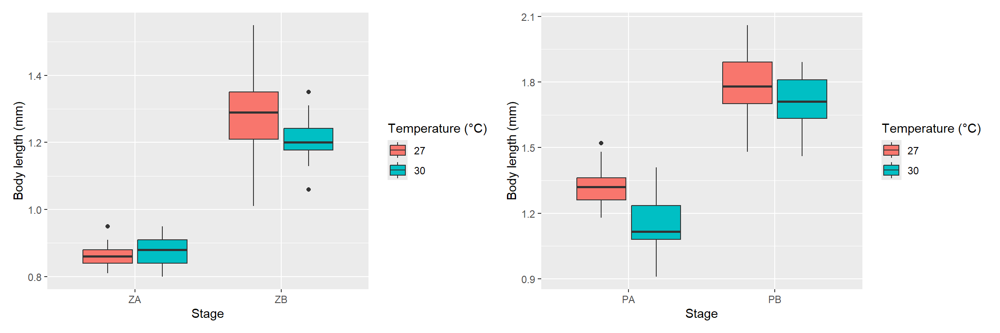
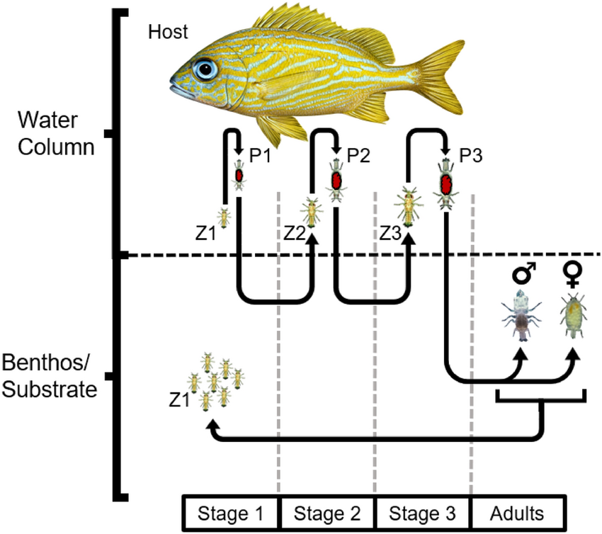
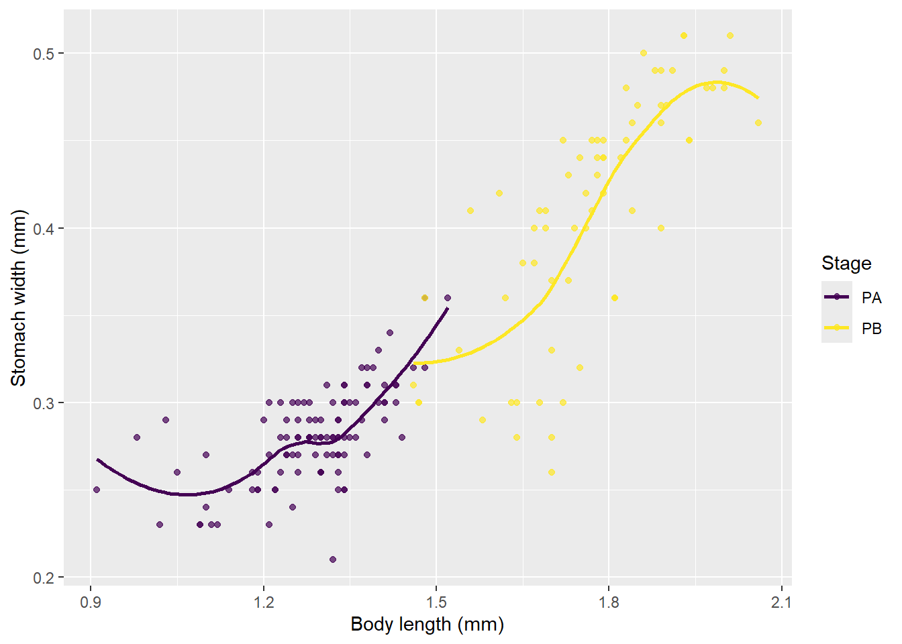

The Effect of Temperature on Development and Behavior of Fish-Parasitic Gnathiid Isopods in the Eastern Caribbean Sea
Introduction
Climate change, driven by anthropogenic greenhouse gas emissions, has significantly increased the Earth’s temperature. According to NOAA’s Global Climate Report, 2023 was the warmest year on record, exceeding the previous record from 2017 and continuing a decade of unprecedented global temperatures (Lindsey and Dahlman, 2024; NCEI, 2024).
Ocean temperatures have risen alongside atmospheric temperatures, with the global ocean absorbing roughly 93% of excess heat (Poloczanska et al., 2016; Johnson and Lyman, 2020). Ocean warming has widespread effects on marine ecosystems influencing organismal physiology, behavior and life histories (Doney et al., 2012; Nagelkerken and Munday, 2016; Payne et al., 2016). While gradual increases (“press warming”) have long been the focus, rapid, episodic climatic events (“pulse warming”) such as marine heatwaves can disrupt ecological dynamics over days to weeks- often beyond organisms’ adaptive capacities. These acute events can alter metabolic performance, suppress immune function and increase disease susceptibility across taxa (Claar and Wood, 2020)
Parasites, which comprise approximately 40% of Earth’s biodiversity, are strongly influenced by temperature due to their ectothermic physiology and temperature-dependent development and transmission (Hatcher and Dunn, 2011; Cizauskas et al., 2017; Sikkel and Welicky, 2019). Pulse warming events may therefore rapidly shift host-parasite dynamics by accelerating parasite development or weakening host defenses (Claar and Wood, 2020). Despite their diversity and ecological importance, marine parasites remain underrepresented in climate-change research, leaving key mechanisms unresolved.
Gnathiid isopods are one of the most prevalent external parasites of reef fishes and play a significant ecological role in ecosystem functioning via host interactions (Sikkel and Welicky, 2019). These small (0.5-3 mm), highly mobile organisms have wide-ranging impacts on their hosts at the physiological, behavioral and community levels (Sikkel et al., 2014; Sikkel and Welicky., 2019). The effects of gnathiid infestation on hosts vary widely depending on the host species, parasite load, infestation duration and host resilience (Bunkley-Williams and Williams 1998; Jones and Grutter, 2005). Such parasitic relationships are recognized as fundamental interactions in the marine ecosystem and biodiversity (Lafferty, 2013). Despite their ubiquity and significance, only a few studies have examined the effects of warming on gnathiid isopods. Elevated temperatures have been shown to impair gnathiid survival (Shodipo et al., 2020) and accelerated development has been proposed as a possible consequence of warming (Sikkel et al., 2019), though this has not been directly tested. To date, studies specifically examining how elevated temperature affects host-finding behavior do not exist, representing a key knowledge gap.
This study investigates how temperature influences development, survivorship and host-finding behavior in a common Caribbean gnathiid, Gnathia marleyi. Development and survivorship were quantified through laboratory rearing experiments, while host-finding behavior was assessed using behavioral trials conducted with a newly developed olfactometer. These results provide insight into the thermal sensitivity of this widespread parasite and its potential ecological role under future ocean-warming scenarios.

Methods
Study Site
John Brewers Bay (18°20’ N, 64°58’ W), located on the west end of the island of St. Thomas, U.S. Virgin Islands has an area of 1.8km2 and depths ranging from 0-33.1 meters (Romero et al., 2021). It is bordered by the Cyril E. King Airport runway, Black Point on the north and a small lagoon on the south. It features a variety of habitats such as seagrass beds, patch reefs, fringing coral reefs and rocky reefs. These habitats support a range of reef-associated species, many of which serve as hosts for gnathiids. The accessibility and convenience of Brewers Bay allow for efficient gnathiid collection.

Collection of gnathiids
Gnathiid isopods were collected using light traps, deployed at 3-5m depth where corals and host fish are present. Light traps were adapted from general design described by Shodipo et al. (2024) using commercial 4” PVC Wye tubes, originally intended for plumbing purposes. One end has a screw top that can be opened to empty the content, one end has a funnel with a 5 mm opening to allow gnathiids to enter but not exit the trap and another end is covered with plankton mesh. A waterproof LED torch was placed inside the trap as a light source attracting gnathiids. Light traps predominantly capture late-stage unfed juveniles (zuphea 2-3), which are unfed, host-seeking larvae. Traps were deployed overnight and retrieved at dawn.
Upon retrieval, traps were transported to the laboratory and emptied into buckets. Water from the traps was then filtered through 55-mm plankton mesh. Gnathiids were identified using a stereomicroscope (10-20x magnification) and then transported into fresh seawater for subsequent experimental use.
Survival and Development
Gnathiids collected from traps were maintained under controlled laboratory conditions to simulate natural seawater parameters. Four temperature treatments were established: 27°C (ambient control), 30°C (moderate warming), 33°C (elevated warming) and 36°C (extreme marine heatwave condition). Each treatment was maintained in separate 5-gallon aquaria with a submersible digital heater (Hygger Marine 50W Titanium Aquarium Heaters). Each heater is equipped with an external IC thermostat controller and digital thermometer, providing precise and continuous temperature regulation (±0.5 °C).
To facilitate metamorphosis of unfed larval gnathiids (zuphea), host fish were collected for the gnathiids to feed on. Host fishes were wild caught by freediving with cast nets and held in aerated buckets at ambient temperature with continuously flowing seawater for no longer than 12 hours. Two host species were used: the French grunt (Haemulon flavolineatum) and Beaugregory damselfish (Stegastes leucostictus), both abundant and easy to catch on shallow Caribbean reefs. These species differ in body size and ecological traits, ideal for examining how host blood meal type might affect gnathiid development time and longevity.
Since gnathiids are nocturnal and typically attach to their host at night, host fish were caught in the late afternoon before dusk to minimize the likelihood that they carried recently attached gnathiids. Collecting fish at this time also ensures they are in holding buckets during dusk, one of the peak feeding periods for gnathiids and therefore immediately available for overnight feeding. Unfed gnathiids were then exposed to these host fish overnight in controlled aquaria to facilitate blood-feeding. After feeding, individuals were allowed to molt through subsequent juvenile stages or to metamorphose into adults as appropriate. This process was repeated until gnathiids reached the required developmental stage for experiments.
Gnathiids were kept individually in small vials and submerged within their respective temperature treatment (See Figure 3). Once gnathiids molted into adults, males were identified and individuals that had not molted into males were assumed to be females. To confirm sex, presumptive females were observed for an additional 24 hours to ensure they did not subsequently molt into males. Two females were paired with one male and these pairs were maintained in their assigned temperature treatments and monitored. When brooding females were observed developing eggs, they were separated into individual vials to allow for the release and counting of larvae (zuphea 1). The number of larvae released by each female was recorded to estimate reproductive output under each temperature treatment.

Survival and development were monitored daily for all temperature treatments. The duration of each juvenile stage, both unfed (zuphea 1, 2, 3) and fed (praniza 1, 2, 3) was recorded, focusing on molting and time to final metamorphosis into adults. Dead individuals are removed immediately using a pipette to prevent contamination and recorded at time of removal. Mortality was defined as the absence of movement after gentle stimulation. For each temperature treatment, the date and stage at death were documented. Morphometric measurements were taken for each gnathiid: body length, head width and stomach width (mm). Measurements were obtained using a Leica MDG41 stereomicroscope (Leica Microsystems, Singapore) equipped with a Carl Zeiss Axiocam 305 color digital camera (Carl Zeiss Microscopy GmbH, Jena, Germany).Images were captured and analyzed using ImageJ software. The fish species on which each gnathiid fed was recorded along with the total length (mm) of the host fish.
Morphological Identification of Life Stages
As juveniles, gnathiids cannot be reliably distinguished by sex; however, adults exhibit strong sexual dimorphism. Additionally, adults are morphologically distinct from all juvenile stages (See Figure 4). Developmental stages were identified based on morphological features. Identification of species relies primarily on the morphology of adult males, particularly the mandibles (Smit and Davies, 2004; Tanaka, 2008). Adult males are characterized by an enlarged cephalosome, segmented thorax and elongated needle-like mouthparts. Females possess a smaller cephalosome, a swollen thorax and reduced mouthparts, lacking mandibles. Parasitic larvae are easily distinguishable from adults, characterized by their large eyes. Zuphea (unfed) are classified with distinct segmentation while praniza (fed) are classified with a swollen thorax (Hadfield et al., 2009).

Behavioral Trials
An aquatic olfactometer similar to that described by Vondriska and Sikkel (2023) was used to quantify host-seeking behavior in G. marleyi. It consisted of a four-zone choice arena that allowed gnathiids to move freely across distinct odor fields (See Figure 5). One inlet supplied filtered seawater conditioned with olfactory cues from a host fish, while the other three supplied unconditioned filtered seawater for a natural gradient of chemical stimulus. Flow rate within the choice arena was set to 15 mL min-1.
To condition seawater with host cues, French grunts (Haemulon flavolineatum) were placed directly into the cue tank of the olfactometer. For trials conducted at 33°C and 36°C, individual fish were used for no more than two trials to minimize stress and potential mortality under heat conditions. A new fish was used for subsequent trials at this temperature. After use, fish were transferred into aerated buckets containing seawater maintained at 2°C below the trial temperature to minimize thermal shock. The heater was then turned off to allow water to cool naturally to ambient temperature. Stress Coat was added to the water to aid recovery and reduce stress. Fish were returned to their location of capture after being used in trials.

Prior to each trial, the olfactometer was flushed with fresh seawater to remove any residual cues. Only third-stage unfed juveniles (Zuphea 3) collected directly from light traps were used in the trials, as this stage is actively host-seeking and large enough to be detected by a video tracking system. Each trial lasted 300s, preceded by a 20-30s habituation period. Behavior was video-recorded using a high speed infrared camera (Basler acA2040-90um NIR, Basler AG, Ahrensburg, Germany) positioned above the olfactometer. The camera recorded at 5 frames per second, resulting in 1500 separate images per trial, which were subsequently compiled into a continuous video for behavioral analysis.
Movement was analyzed using EthoVision XT (Noldus Information Technology). Metrics included total and average distance moved, frequency and duration of high-activity movements, and time spent in each odor zone. Behavioral responses were compared across temperature treatments.
Overview
Note on terminology used in this study. While the life-cycle stages shown in Figure 1 follow the nomenclature of Hendrick et al. (2023)—Z1, Z2, Z3 for unfed stages and P1–P3 for their corresponding fed (praniza) stages—this project uses a modified staging system for simplicity during data processing. Unfed stages are labeled as ZA and ZB (corresponding to Z1 and Z2–Z3), and fed praniza stages are categorized as PA and PB (corresponding to P1 and P2–P3).
This project uses two datasets — unfed gnathiid stages (ZA, ZB) and fed stages (PA, PB) — to explore how temperature and feeding affect body size and stomach width in fish-parasitic gnathiid isopods. The Lifecycle_Growth dataset includes measurements of head width and body length for unfed (ZA, ZB) and fed (PA, PB) stages (in mm). The Fed_gnathiids dataset includes fed stages that has head width, body length and stomach width measurements that indicate how much blood has been ingested.
Results
Body length increases across juvenile stages, with fed individuals (PA and PB) being larger overall than unfed individuals (ZA and ZB) (See Figure 6). This pattern reflects post-feeding growth. Temperature contributes to variation in size, but developmental stage and feeding status show the clearest differences.

As seen in Figure 7, there is a strong, stage-specific relationship between body size and stomach width in fed gnathiids. Stomach width increases with body length, but the scaling is non-linear and differs between developmental stages. PA individuals (purple) occupy a smaller size range and show moderate increases in stomach width as body length increases. In contrast, PB individuals (yellow) are larger overall and display a steep rise in stomach width with increasing body length, reflecting a substantial increase in feeding capacity at this later stage. The smoothed trend lines demonstrate that stomach expansion accelerates once individuals transition from PA to PB, suggesting a developmental threshold after which gnathiids can ingest and store larger volumes of blood.

At 27°C, gnathiids spent the most cumulative time in the top-left (TL) zone, showing a stronger tendency to occupy this area compared to the fish zone or the other regions (See Figure 7). In contrast, at 30°C, individuals spent a greater amount of time in the fish zone, indicating a temperature-dependent shift in behavior. While the remaining zones showed relatively lower activity across both treatments, these results suggest that gnathiid movement patterns and zone preference can change with temperature, with cooler conditions favoring the TL zone and warmer temperatures increasing time spent near the fish cue.
Summary
This project used juvenile gnathiid isopod data to visualize how temperature affects body size and development. Unfed stages (ZA, ZB) and fed stages (PA, PB) were compared across 27°C and 30°C treatments. Body length was generally greater at 27°C, suggesting reduced growth under warmer conditions. Fed stages were larger overall, and stomach width increased with body size.
Behavioral results showed a temperature-dependent shift in spatial preference. At 27°C, individuals spent the most time in the top-left (TL) zone, whereas at 30°C, they spent the greatest cumulative duration in the fish zone. The remaining zones showed lower activity across both treatments.
References
Bunkley-Williams, L., & Williams, E. H. (1998). Isopods associated with fishes: A synopsis and corrections. Journal of Parasitology, 84, 893–899.
Cizauskas, C. A., Carlson, C. J., Burgio, K. R., Clements, C. F., Dougherty, E. R., Harris, N. C., & Phillips, A. J. (2017). Parasite vulnerability to climate change: An evidence-based functional trait approach. Royal Society Open Science, 4(1), 160535.
Claar, D. C., & Wood, C. L. (2020). Pulse heat stress and parasitism in a warming world. Trends in Ecology & Evolution, 35(8), 704–715.
Doney, S. C., Ruckelshaus, M., Duffy, J. E., et al. (2012). Climate change impacts on marine ecosystems. Annual Review of Marine Science, 4, 11–37.
Hatcher, M. J., & Dunn, A. M. (2011). Parasites in Ecological Communities: From Interactions to Ecosystems. Cambridge University Press.
Johnson, G. C., & Lyman, J. M. (2020). Warming trends increasingly dominate global ocean. Nature Climate Change, 10, 757–761.
Jones, C. M., & Grutter, A. S. (2005). Parasitic isopods reduce haematocrit in captive blackeye thicklip. Journal of Fish Biology, 66, 860–864.
Lafferty, K. D. (2013). Marine biodiversity and parasitism. Bulletin of Marine Science, 89, 123–134.
Lindsey, R., & Dahlman, L. (2024). Climate Change: Global Temperature. NOAA Climate.gov.
Nagelkerken, I., & Munday, P. L. (2016). Animal behaviour shapes the ecological effects of ocean acidification and warming. Global Change Biology, 22, 974–989.
National Centers for Environmental Information (NCEI). (2024). Global Climate Report — Annual 2023. NOAA.
Payne, N. L., Smith, J. A., van der Meulen, D. E., et al. (2016). Temperature dependence of fish performance in the wild. Functional Ecology, 30, 903–912.
Poloczanska, E. S., Burrows, M. T., Brown, C. J., et al. (2016). Responses of marine organisms to climate change across oceans. Frontiers in Marine Science, 3, 62.
Shodipo, M. O., Duong, B., Graba-Landry, A., Grutter, A. S., & Sikkel, P. C. (2020). Effect of acute seawater temperature increase on survival of a fish ectoparasite. Oceans, 1(1), 3.
Sikkel, P. C., Richardson, M. A., Sun, D., et al. (2019). Changes in abundance of gnathiid isopods associated with bleaching events. Coral Reefs, 38, 1185–1194.
Sikkel, P. C., Sears, W. T., Weldon, B., & Tuttle, B. C. (2011). Host-finding mechanisms in a Caribbean gnathiid isopod. Marine Biology, 158, 1075–1083.
Sikkel, P. C., & Welicky, R. (2019). The ecological significance of parasitic crustaceans. In Parasitic Crustacea: State of Knowledge (pp. 197–221).